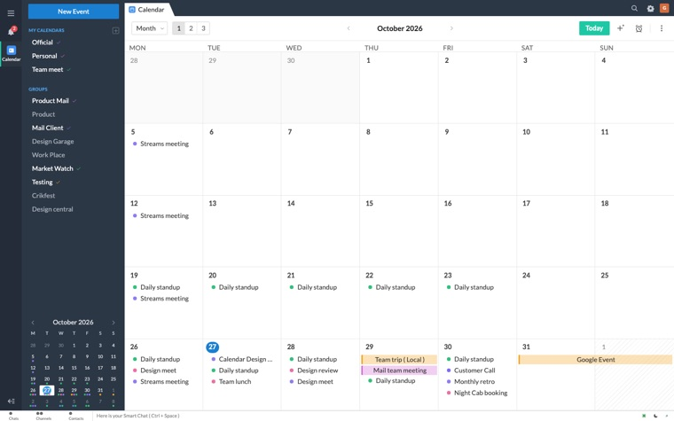
Zoho Calendar
Revamping the calendar experience for better productivity and clarity.
I’m a Product Designer with 10+ years of experience working across multiple products, focused on improving user experiences, redesigning interfaces, and building intuitive digital solutions.

Revamping the calendar experience for better productivity and clarity.
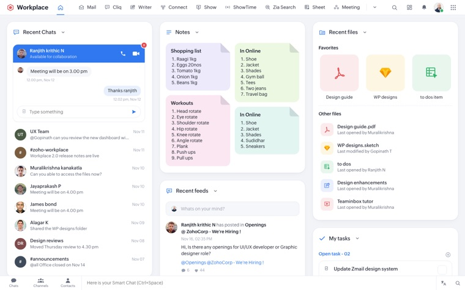
Designing a unified dashboard for the Zoho Workplace ecosystem.
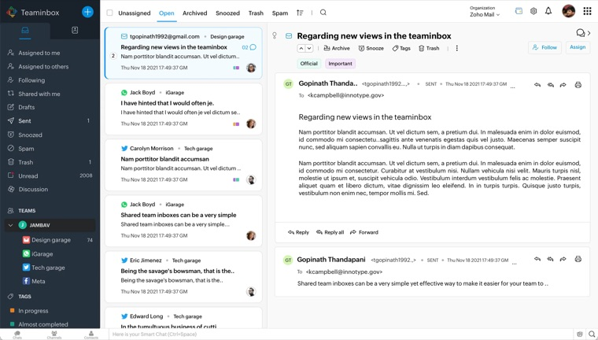
Enhancing and maintaining the shared inbox experience for teams.
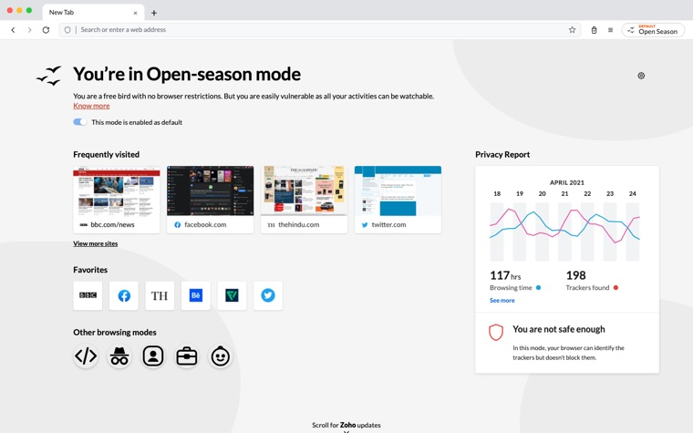
Designing new modes and experiences for a modern browser.
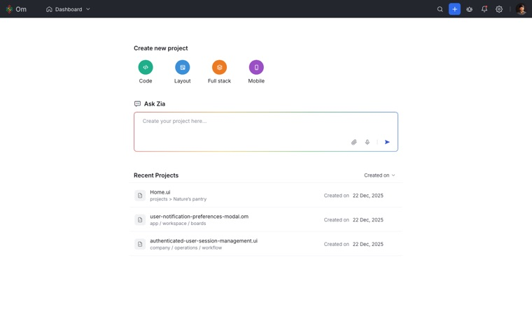
Improving the user interface for a more seamless experience.
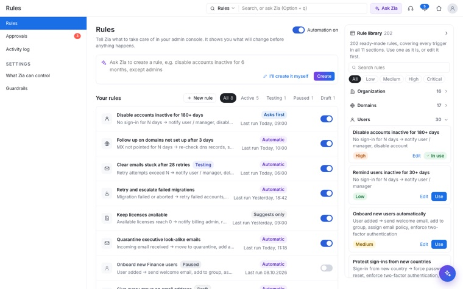
AI-assisted rules for the Mail admin console. Describe a rule to Zia or build it yourself, pick from a 202-rule library, and approve risky changes.
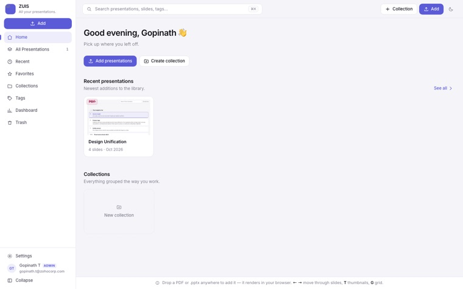
Building the ZUIS app using vibe coding, combining design thinking with development.

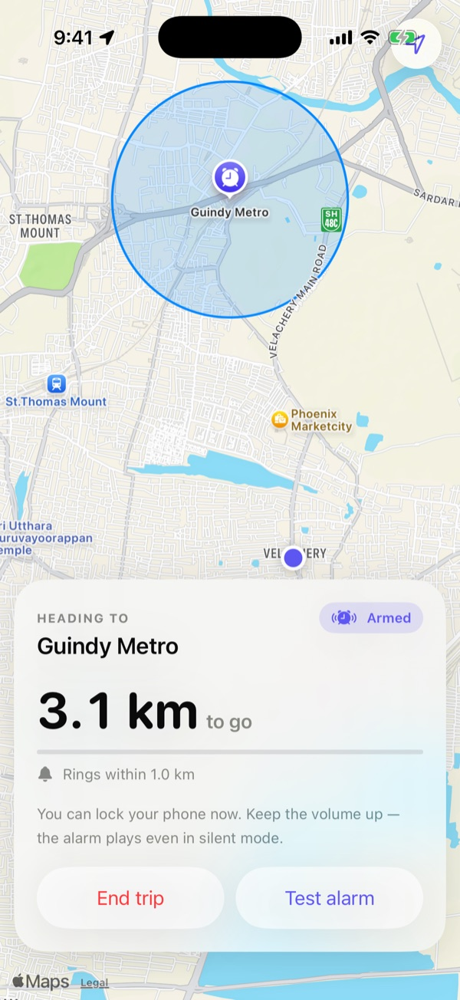

A location-based travel alarm for iOS. Pick your stop, nap on the bus or metro, and it wakes you before you arrive, even on silent.


A personal trainer for iOS. Set a goal and it builds your weekly plan, shows every exercise as an animated figure, logs your sets with a rest timer, and tracks progress.
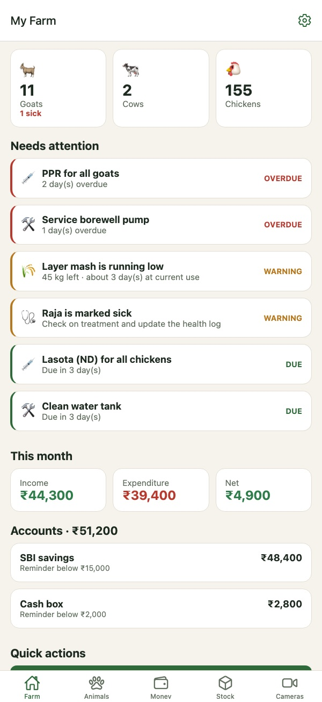

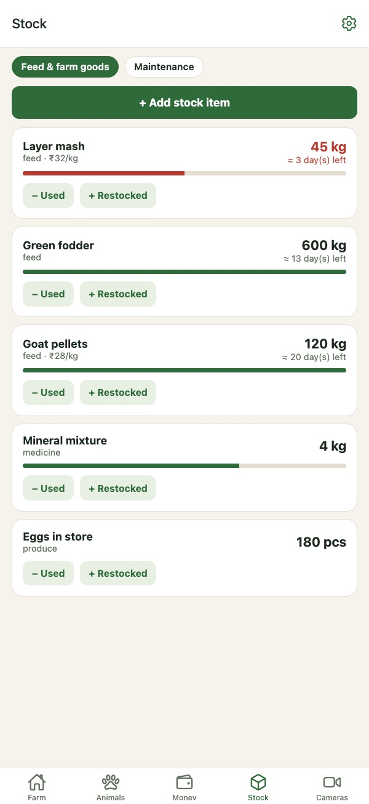
A goat, cow and chicken farm app for iPhone, Android and the web. Livestock, money, feed and maintenance in one place, an AI health check from a photo, and reminders before a vaccination, the feed or the bank balance runs out.
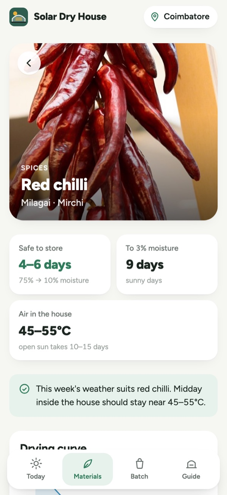
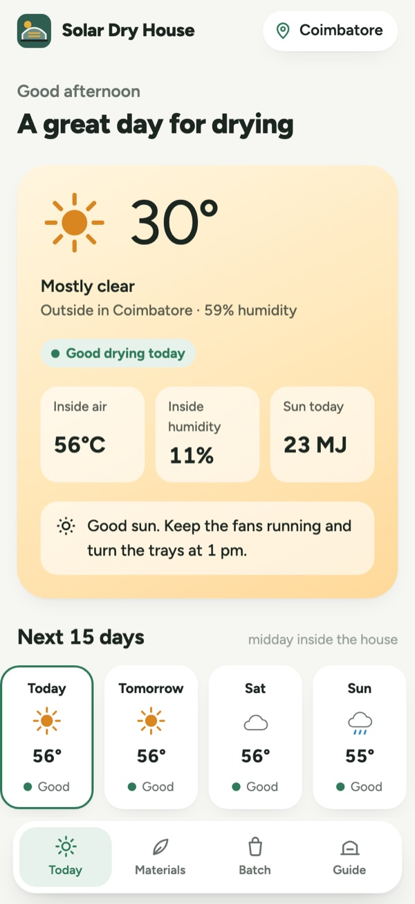
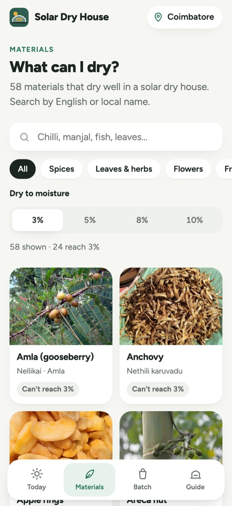
A web and mobile app for solar dryer operators. It reads the live weather where the dryer stands and turns it into ready dates for 58 crops, from chilli to copra, and says plainly when a 3% moisture target can't be reached.
I started at Zoho as a Visual Designer and grew into Product Design over 10+ years. Working across multiple products has shaped how I approach design: understand the wider system, find the real user friction, and make the experience easier to understand.
My work spans product redesigns, dashboards, shared workflows, browser experiences, and design-system practice. I focus on design quality, collaboration, and developer handoff, while using AI tools and vibe coding to explore ideas and bring prototypes to life.
01 · Understand
Review existing products, map workflows, and discuss problems and constraints with stakeholders.
02 · Explore
Use flows, wireframes, interface explorations, and Figma to make design decisions tangible.
03 · Deliver
Use design reviews and stakeholder feedback, then prepare clear designs and handoff details for development.
Peer recognitions I’ve received through Jems, Zoho’s internal kudos channel — from designers, developers, and leads I’ve worked with.
The Om Studio editor design flow is outstanding, thoughtfully covering a wide range of use cases. The UI across Code, Layout Builder, and AI is well structured and clearly reflects the effort behind crafting the overall editor experience. I’ve noticed the initial ideation and the challenges involved in shaping this thoughtfully. Excellent work!
The user experience ideas you shared after analyzing the Workplace AI flows of “Save,” “Recent,” and “Suggested” are extremely valuable. Your approach to simplifying and refining these elements has significantly improved the overall user experience. This clearly reflects your exceptional UX skills and remarkable growth in the field.
The “WhatsApp Business Initiated Conversation” flow that you designed in the TeamInbox web app is excellent and very user-friendly. It’s evident that this level of simplicity comes from a deep understanding of what users need and how they interact with the platform. The flow is intuitive, visually clean, and ensures that it is effortlessly used.
TeamInbox’s “All views” — Kanban, Grid, Vertical split, Horizontal split and especially Sheet views came out very, very nice. Your uncompromising efforts and dedication to delivering the best possible design have truly been remarkable. The proposed designs are not only visually appealing but also user-friendly and intuitive. Great work Gopi!
The team inbox now has new view design options. It came out really well, especially the kanban view UI and UX, which are excellent, as well as the sheet view — mail-type content in a sheet view looks exactly as it had been imagined. You did an outstanding job, Gopi. Keep on rocking.
TeamInbox New Views came out really nice and the ideas you proposed triggered new ideas for views for us. Thanks and good work Gopi
The OM UI Builder layout explorations you worked on, even without immediate tangible outputs, have been very valuable. They helped spark meaningful conversations between designers and developers, brought everyone onto the same page, and gave us clearer direction on how to move forward. It’s evident that a lot of careful thinking and sincere effort went into the work.
Your commitment to the vision and ideation of Zoho Mail’s empty states is truly admirable, and your willingness to support others is deeply appreciated. Leadership has expressed their appreciation for the excellent work.
Big appreciation to Gopi for taking the initiative and ownership of vibe coding an app for the Design System guidelines. This is a much needed solution that simplifies reviews and enables other product teams to easily track their progress in adopting the guidelines across their products.
You did a great job designing the signature creation and permissions flow for TeamInbox (web) at both the org and team levels — and the way you put it together just by reading and understanding the requirements on your own makes it even more impressive.
Your contribution to OM Builder stands out for its clean design and strong conceptual approach. The structured layout, thoughtful feature integration, and clarity in presentation reflect a deep understanding of both functional requirements and design standards.
Your UX suggestions for the Workplace AI ‘Save,’ ‘Recent,’ and ‘Suggested’ flows were really impressive. You’ve made the overall experience much simpler and better. Great job!
The TeamInbox creation flow chart, which you designed for easy understanding when facing process confusion, shows your commitment to achieving more clarity on the creation flow. Keep it up Gopi!
Your understanding of the TeamInbox product and the points you raise in our discussions regarding its features are very mature. I felt this in the way you handled the “New Channel Creation” feature flow and the ideas you presented for improving it. Good job, Gopi!
Common preview for all Inboxes (WhatsApp, Mail, Telegram, etc.) in the TeamInbox web app is neatly done while retaining their app feel in the preview. Though “All apps preview conversation” and the existing “Discussion” have similar functionality, the UI/UX level differentiation you proposed between them is very well thought out. Great effort and good work Gopi
Thank you for providing a demonstration of the TeamInbox channel separation web flow. It looks great and is built from the user’s perspective. I am appreciative of your efforts and dedication. Keep it up!
Thanks for timely help in scouting across all Zoho products, finding UI/UX issues, and noting them for the Design Unification presentation in a very short time. This effort is so valuable Gopi. Good work!
You did an excellent job of taking screenshots and categorising all Zoho products for the product standardisation process.
Flawless job of Ulaa Browser Settings design support and great coordination within the team. UX betterments etc. Great work and much appreciated Gopi
Thanks for helping to design the Ulaa browser internal page icons. The icons came out very good.
Thanks for identifying the issue in the Ulaa browser’s Profile page. Always proving your UX skills. Keep rocking
Thank you so much for your valuable feedback on Workplace dashboard and app grouping feature.
Thank you so much Gopinath for helping me to finish the Workplace review on time. Your timely help is much appreciated.
You brought a clear direction to Om studio and communicated it with clarity. The effort you put in, along with being open to questions and feedback, really helped us stay aligned. Amazing work, Gopi!
The Om Studio editor design flow is awesome — covering most use cases beautifully. The UI across Code, Layout, AI, and Mobile feels thoughtfully structured, with great effort clearly poured into shaping the entire editor experience. Excellent work, Gopi!
The Team Inbox signature design has turned out exceptionally well with excellent UX. Great job Gopi.
Your informative approach and thoughtful ideas for the mail empty state received appreciation from leadership. Well done, Gopi
Your thoughtful approach and the creative illustration for the mail’s empty state were genuinely outstanding. Well done Gopi
Your idea, along with the creative illustration for the empty state of the mail, was truly exceptional.
Thank you for sharing such interesting ideas for the empty state design so quickly and clearly, I truly appreciate your help.
The tree diagram suggestion was value-adding and made the Mail Search rules clearer and easier to follow. Thanks, Gopi!
Your suggestion to add a hide/show field in the subtask was a great idea! It was extremely helpful and came at the perfect time. Thanks Gopi
Your inputs for the Quick Add description box were extremely valuable and helped me. Thank you for the timely support.
Thank you, Gopinath, for your valuable insights on the positioning of the Tools feature and the overall user experience.
Well done, Gopi! The ToDo Task Template design is clean, user-friendly, and easy to understand. Great job keep it up!
Your excitement for design and dedication to the group are evident in your willingness to assist us in coming up with better ideas when we encounter a design challenge on the ToDo’s Board view. Thank you so much Gopi
I want to express my gratitude for your timely assistance in finding a better solution to the design problem with the ToDo’s Board view.
When a teammate encountered a design problem in the ToDo’s Board view, your willingness to assist in finding better solutions showcases your passion for design and dedication to the team. Please continue to offer your valuable help.
The new Task web app’s “Move an Existing Task to another Main/Sub Task” feature flow is superbly cracked. Good job Gopi
Wow! I came to you for a quick illustration at the absolute last minute and you jumped into action without any hesitation and gave me the illustration. Thank you so much for your quick assist that I used for my talk.
He provided amazing ideas for the DG talk presentation together with fun elements, and he did a superb job of narrating the tale of the WORKPLACE. Many thanks, Gopi
Thanks for explaining Auto Layout in Figma so clearly. I understood it quickly, and it will definitely help me save time in the future.
Thanks for helping me to solve the problem in Figma prototype.
I appreciate you sharing the iMovie app with me because the results turned out just as well as you had said.
Thank you for sharing your knowledge on Zoho Mail; it is quite helpful to me.
I thank you for spending time to respond to my questions and review the TeamInbox submissions.
Thank you for solving the sketch file sync issue so soon.
Thanks for helping to share the sketch file in Zeplin plugin. You always show your mastery in Sketch App.
Thank you for helping me review 1000+ design profiles for the Campus design recruitment. It wouldn’t have been possible without your support. Because of your effort, we were able to hire the right person right at the edge of the hiring freeze.
When the admin team requested last-minute requirements and support for the Zoho Michaung Coverage project, you got right in, have been an enormous support, and made it happen. It is exactly what our team aspired to be, and thank you for the spirit!
Thanks a ton for being a star in our video shoot! Your dedication and contribution was key to its success. You really brought the project to life. Thanks a lot.
Thanks for showing consistent interest on Bio-Diversity Campus Coverage. This shows the passion towards new interest on photography.
Thank you for your fantastic photography coverage on both the auction day and match day. Your dedication to capturing these moments is truly commendable. Thank you for your invaluable contributions!
Thanks for taking up media handling to cover all the happenings in our team out, JPL and capturing many memorable moments. Your support in organising JPL is superb.
Thanks for capturing the best moments in our Chess Olympiad and being supportive in organising the tournament.
It was never in the plan. Only during the event we understood we missed arranging a photo session to savour the first ever JPL auction memories. You were our saviour to quickly lend a hand in setting things up to capture the moments with mobile and then the DSLR camera. It always feels blessed to have great friends around us.
Thanks for coming up with the Creator form and sharing with the team to get the player details. I appreciate your enthusiasm to learning new things (Deluge) while also volunteering to manage Jersey. Keep rocking mate. You were an inspiration.
From vibe-coding a website that let everyone choose from three destinations, to personally inviting every sub-team, to keeping everyone updated with ticket bookings, countdowns, and every little detail — you made the excitement build even before the trip began! During the trip, the way you managed the people, vendors, and finances was simply outstanding. Huge appreciation for the energy, ownership, and heart you put into making this happen.
Kudos on building an interactive DG Team Trip destination selection website using complete Vibe Coding! Good Job Gopi
The amount of effort you’ve put into organizing this trip, managing all the details, and bringing everything together so smoothly is truly commendable. Thanks for going the extra mile and making this a memorable experience for the entire team.
I would like to express my sincere gratitude to my team for successfully handling the work items during my absence. Your exceptional efforts and dedication were instrumental in ensuring that everything ran smoothly. Thank you for your professionalism and commitment, which contributed to our continued success.
Contact details will be added when you’re ready to publish them.